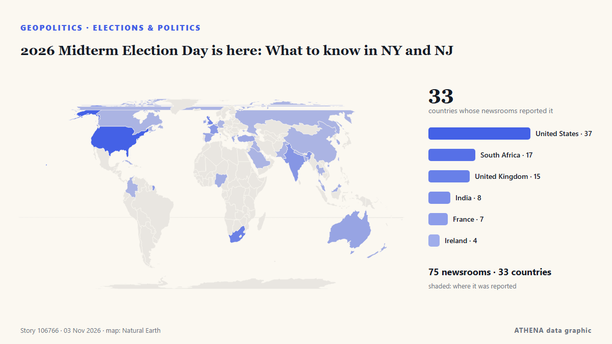

الانتخابات والسياسة
| 21 أكتوبر | 1 |
|---|---|
| 22 أكتوبر | 0 |
| 23 أكتوبر | 0 |
| 24 أكتوبر | 1 |
| 25 أكتوبر | 0 |
| 26 أكتوبر | 1 |
| 27 أكتوبر | 1 |
| 28 أكتوبر | 2 |
| 29 أكتوبر | 1 |
| 30 أكتوبر | 5 |
| 31 أكتوبر | 1 |
| 1 نوفمبر | 5 |
| 2 نوفمبر | 4 |
| 3 نوفمبر | 1 |
تُعرض العناوين بالإنجليزية كما نُشرت.

2026 Midterm Election Day is here: What to know in NY and NJ
نشرته 80 مصدرًا في 33 دولة منذ 30 أكتوبر. أول من نشره: NPR. يقدّر ATHENA الخطر بـ3.2/10 (معتدل)، بثقة 90٪.
Americans vote in midterms set to upend Trump presidency
Democrats are seeking to seize control of both chambers of Congress as voters voice growing frustration over rising living costs, inflation and the war with Iran. من Kyiv Post
Americans head to polls in midterm elections seen as referendum on Trump
Control of the Senate and House of Representatives, both currently held by the Republicans, is at stake US midterm elections 2026: latest updates Americans are heading to the polls today in US… من The Guardian
Trump makes final US midterm pitch at troubled Reflecting Pool
His speech will contrast the Republicans' efforts making the US 'safer and wealthier' with the Democrats’ 'radical, America Last agenda'. من The Straits Times
Republicans, Democrats make closing pitches in midterms
Democrats have sought to contain a rift in Michigan's US Senate race after one of their own crossed party lines to endorse the Republican. من RTÉ News
Trump approval near record low ahead of elections, poll finds
Trump's approval rating held near a record low as a broad swath of the US electorate saw their vote on Tuesday as a way to oppose the Republican president. من The New Arab
UK PM Burnham says he is ‘open’ to formal apology for slavery, but rules out reparations
At least 12.5 million Africans were abducted and sold into slavery. من Express Tribune
Netanyahu Is Pressing Trump to Attack Iran After the Midterms, Officials Say
Democratic doctors aim to convert the backlash against the Trump administration’s health policies into midterm votes. من Al Jazeera English
Lula Can Fill Six Brazil Central Bank Seats
Our experts unpack what Lula’s victory means for Brazil’s ties with Washington and how it could reshape a region trending right. من Atlantic Council
Judge dismisses Trump administration's lawsuit over two Dan Sullivans in Alaska election
The updated lawsuit cites a new report that Democratic operatives recruited a competitor to confuse voters. من Al Jazeera English
Presidential runoff Iotova Wins over 85% of Votes in Bulgaria's Presidential Runoff in Moldova
Bulgarians voted Sunday in a presidential runoff between two candidates with opposing views on the Ukraine war and relations with Russia as tensions mount in the Black Sea. من France 24 English
Presidential Runoff Turnout Stands at 19.33% as of 16:00
Voter turnout in Bulgaria’s presidential and vice-presidential election stood at 2.4% as of 9:00 a.m.... من Novinite
Haley Stevens endorses GOP candidate in Michigan Senate race, spurning Abdul El-Sayed
Rep. Haley Stevens was scheduled to attend a unity event today with Abdul El-Sayed, who beat her in the Democratic primary. من NPR
Trump administration bolsters bid to block Alaska Senate certification
President Donald Trump’s administration filed a revised lawsuit on Thursday seeking to block Alaska’s election results if Republican incumbent Dan Sullivan loses narrowly and issued more than 40… من FBC News
Thousands protest in India's capital against voter roll revision
NEW DELHI: Thousands joined a protest led by opposition politicians in India’s capital on Sunday, renewing demands for the country’s election chief to resign over an overhaul of voter lists they say… من New Straits Times
Indian authorities tighten security ahead of big opposition march in Delhi
Protesters are set to demand the resignation of India's election chief over a controversial revision of voter lists. من CNA (Channel NewsAsia)
US judge orders Trump administration to cease threats to prosecute election officials
The ruling comes days before the US midterm elections that will determine control of Congress. من The Straits Times